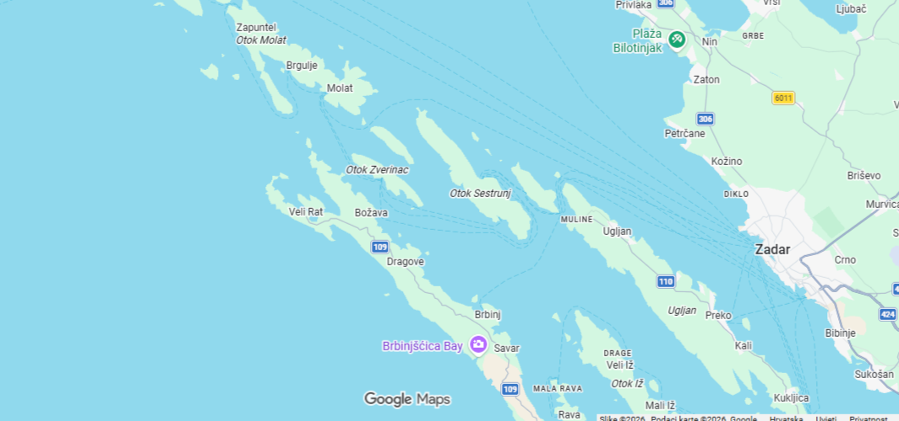

Nije izlet. To je Đita — vaš privatni all‑inclusive izlet brodom iz Sukošana, Zadarska regija.
Gustoza Đita je potpuno privatno, osobno oblikovano otočno iskustvo — jedinstveni privatni izlet brodom iz Sukošana, pokraj Zadra — namijenjen putnicima koji žele više od standardnog izleta brodom. Istražujete zadarski arhipelag onako kako to rade lokalci: polako, slobodno i bez unaprijed zadanog plana.
Većina đita vodi prema Ravi, Dugom otoku i Molatu, gdje tihe uvale i mala mjesta određuju ritam dana. Na višednevnim đitama spavate na brodu i budite se s izlaskom sunca — bez gužve, bez buke, samo more oko vas. To je all‑inclusive izlet brodom u Hrvatskoj, oblikovan u potpunosti prema vašem tempu i raspoloženju.
Ja sam Vedran — doslovno znači “vedar, vedar dan” — ali ako vam je to nezgodno, slobodno me zovite V. Svaku đitu vodim kao da ste moji osobni gosti, a ne samo imena na listi.
Đita nije program; to je osjećaj. Dan koji se prilagođava vašem ritmu i onome što vam se u tom trenutku radi. A budući da je privatna, nema žurbe, nema gužve i nema strogih pravila — samo vi, more i privatni otočni izlet u blizini Zadra oblikovan točno po vašoj mjeri.
Važne informacije
Odakle polazimo?
Polasci su iz Sukošana, samo nekoliko minuta od Zadra. Ako je potrebno, mogu prilagoditi mjesto sastanka tako da vam najbolje odgovara.
Što je uključeno u all‑inclusive paket?
Doručak, snackovi, kasni ručak (s čašom vina ili bezalkoholnim pićem po osobi), piće na brodu (voda i sokovi), gorivo, oprema za ronjenje, ručnici — sve što vam treba za opušten i bezbrižan dan na moru. Nema skrivenih troškova.
Koliko gostiju može sudjelovati?
Na jednodnevnoj điti brod udobno prima do 8 gostiju. Na višednevnim đitama idealan broj je do 5 gostiju. Napomena: noćenje je na brodu.
Je li hrana uključena?
Da — doručak, snackovi, piće na brodu i kasni ručak (uključujući čašu vina ili bezalkoholno piće po osobi) uključeni su u cijenu. Ako radije želite ručati u lokalnoj otočnoj konobi, možemo prilagoditi plan.
Možemo li birati rutu?
Da — ruta je vrlo fleksibilna unutar naše službene zone plovidbe. Možemo istraživati mirne vale, mala otočna mjesta, skrivene uvale i otvorene dijelove između Rave, Dugog otoka, Molata i okolnih otoka. Područje je široko, raznoliko i puno prekrasnih mogućnosti.
Vaše želje oblikuju dan: tempo koji volite, vrste mjesta koja želite posjetiti i atmosfera koju tražite. Vi birate smjer i stil iskustva, a ja se brinem za planiranje, sigurnost i prilagodbu rute uvjetima na moru.
Karta zone plovidbe ispod prikazuje cijelo područje u kojem se možemo slobodno kretati tijekom dana. Unutar tog prostora, ruta je gotovo u potpunosti po vašoj želji.
